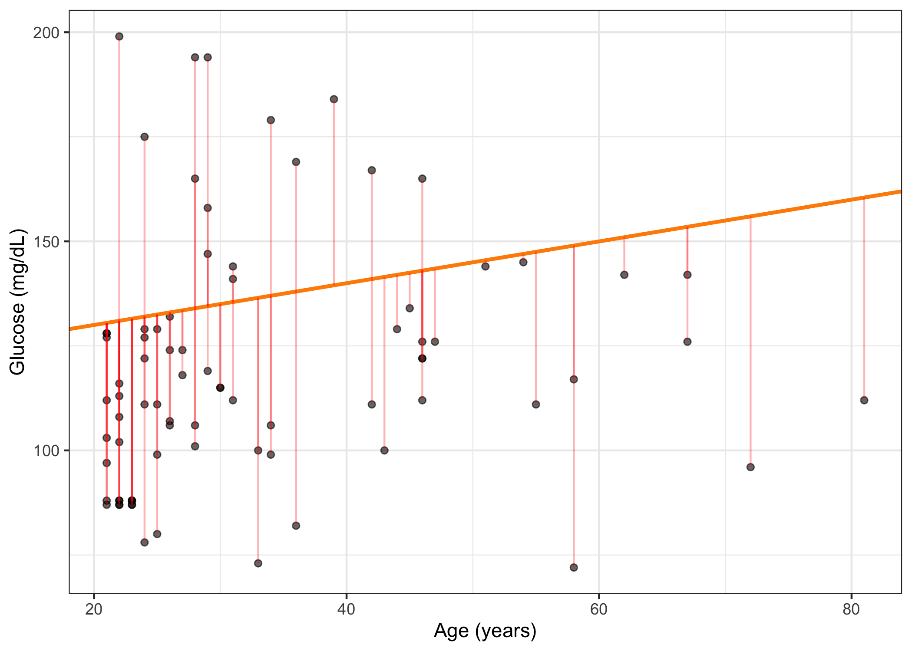
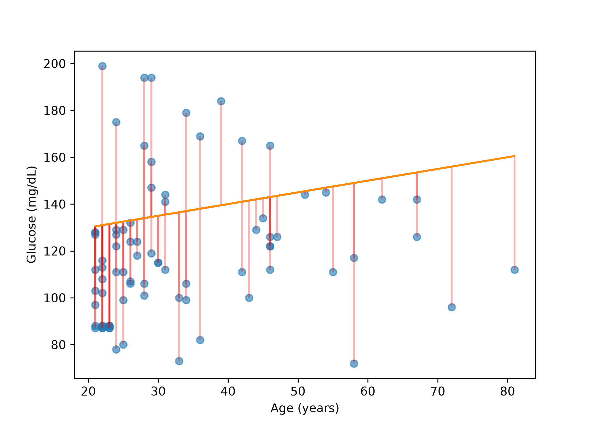
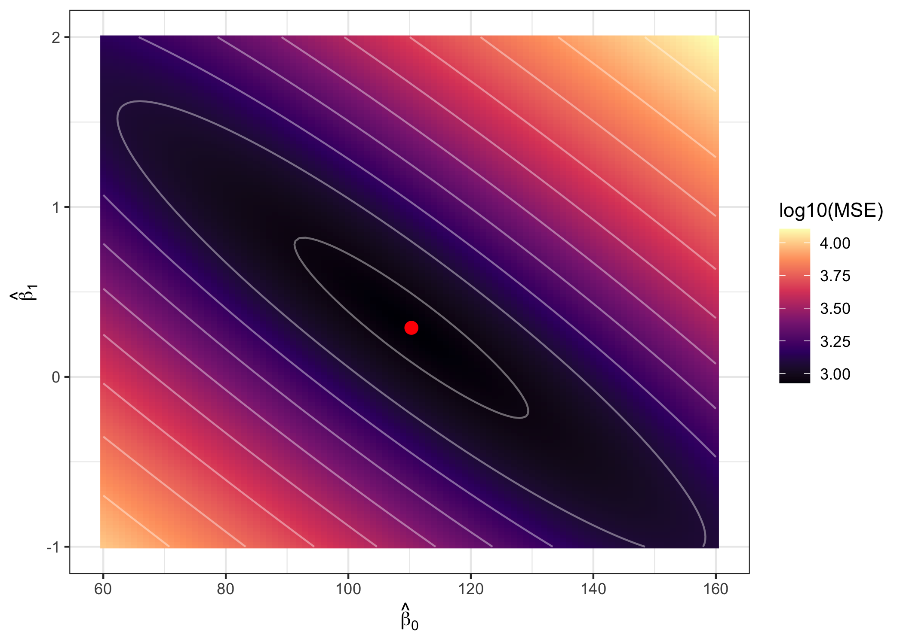
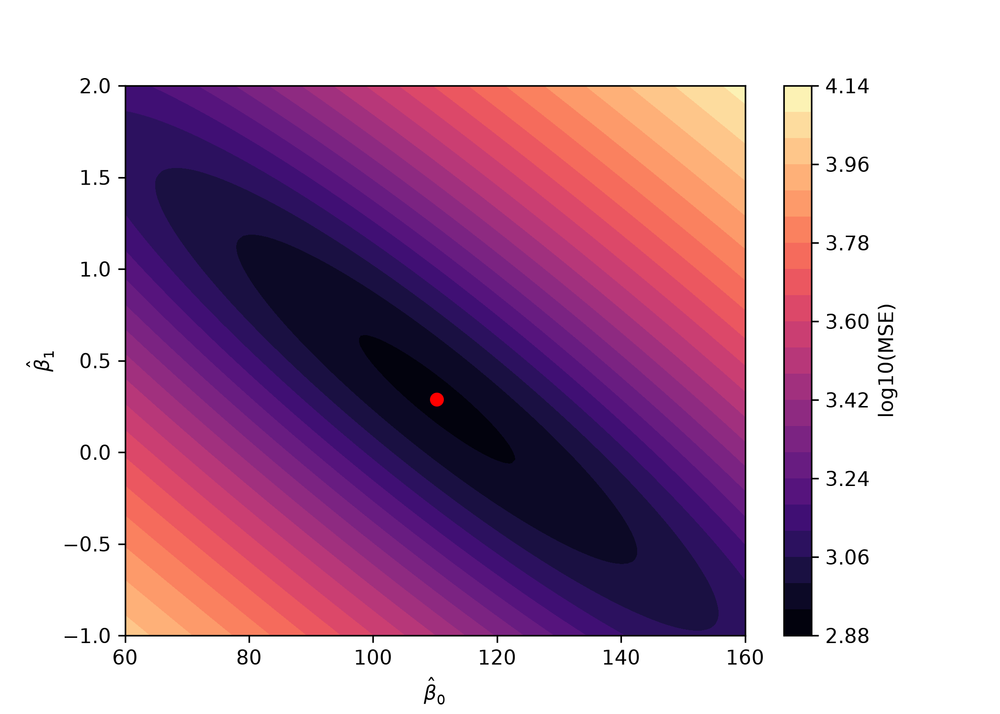

library(readr); library(dplyr); library(ggplot2)
diab <- read_csv("data/diabetes.csv")
glu <- diab |> filter(glucose > 0) |> slice(1:80) |> select(age, glucose)10 Exercise 3.2 — Loss functions
10.1 Objectives
- Compute a residual, a sum of squared residuals, a mean squared error and a mean absolute error from a set of predictions, in both languages, without looking up a formula.
- Say what squaring does to a large error that taking the absolute value does not, and show it with a number.
- Evaluate a loss at parameter values of your own choosing, and find the parameters that minimise it by searching a grid.
10.2 Why this, here
Chapter 9 fitted a line and called it the best fit, without ever saying best at what. This exercise supplies the missing definition. A loss function scores a candidate line against the data; the fitting procedure returns the line with the lowest score. Change the score and you change the line — and then Chapter 11 asks how the lowest score is found at all.
10.3 The same 80 rows
Each chapter is a fresh session, so load the data again.
import pandas as pd
import numpy as np
diab = pd.read_csv("data/diabetes.csv")
glu = (diab.loc[diab["glucose"] > 0, ["age", "glucose"]]
.head(80)
.reset_index(drop=True))10.4 One point, one residual
A residual is what the model got wrong for one patient:
\[r_i = y_i - \hat{y}_i\]
Take a line nobody fitted — \(\widehat{\text{glucose}} = 120 + 0.5 \times \text{age}\), invented by hand — and find the patient it serves worst.
glu <- glu |> mutate(pred_guess = 120 + 0.5 * age,
resid_guess = glucose - pred_guess)
worst <- glu |> slice_max(abs(resid_guess), n = 1)
worst#> # A tibble: 1 × 4
#> age glucose pred_guess resid_guess
#> <dbl> <dbl> <dbl> <dbl>
#> 1 58 72 149 -77glu["pred_guess"] = 120 + 0.5 * glu["age"]
glu["resid_guess"] = glu["glucose"] - glu["pred_guess"]
worst = glu.loc[[glu["resid_guess"].abs().idxmax()]]
worst#> age glucose pred_guess resid_guess
#> 41 58 72 149.0 -77.0That patient is 58, their measured glucose is 72, the hand-drawn line predicts 149, and the residual is −77 mg/dL — an error larger than the measurement itself.
ggplot(glu, aes(x = age, y = glucose)) +
geom_point(alpha = 0.6) +
geom_abline(intercept = 120, slope = 0.5, colour = "darkorange", linewidth = 1) +
geom_segment(aes(xend = age, yend = pred_guess), colour = "red", alpha = 0.3) +
labs(x = "Age (years)", y = "Glucose (mg/dL)")
import matplotlib.pyplot as plt
fig, ax = plt.subplots()
ax.scatter(glu["age"], glu["glucose"], alpha=0.6)
ax.vlines(glu["age"], glu["pred_guess"], glu["glucose"], color="red", alpha=0.3)
ax.plot(glu["age"], glu["pred_guess"], color="darkorange")
ax.set_xlabel("Age (years)"); ax.set_ylabel("Glucose (mg/dL)")
plt.show()
The red segments are the residuals. A loss function is a rule for turning all 80 of them into one number.
10.5 Four ways to add up 80 mistakes
Residuals are positive and negative, so adding them cancels most of the error away. Two repairs are in common use, and they are not equivalent.
\[\text{SSR} = \sum_{i=1}^{m} r_i^2 \qquad \text{MSE} = \frac{1}{m}\sum_{i=1}^{m} r_i^2 \qquad \text{MAE} = \frac{1}{m}\sum_{i=1}^{m} \left| r_i \right|\]
Squaring is the L2 loss; taking the absolute value is the L1 loss. The mean squared error is the sum of squared residuals divided by the number of rows, so it does not grow simply because the dataset is larger. The root of the MSE — RMSE — is back in the outcome’s units and is easier to quote.
loss_table <- function(residuals) {
m <- length(residuals) # the number of residuals passed in,
ssr <- sum(residuals^2) # not the size of some data frame
c(SSR = ssr, MSE = ssr / m, RMSE = sqrt(ssr / m),
MAE = mean(abs(residuals)))
}
round(loss_table(glu$resid_guess), 3)#> SSR MSE RMSE MAE
#> 90868.250 1135.853 33.702 28.656def loss_table(residuals):
residuals = np.asarray(residuals)
m = len(residuals)
ssr = np.sum(residuals**2)
return {"SSR": ssr, "MSE": ssr / m, "RMSE": np.sqrt(ssr / m),
"MAE": np.mean(np.abs(residuals))}
{k: round(v, 3) for k, v in loss_table(glu["resid_guess"]).items()}#> {'SSR': np.float64(90868.25), 'MSE': np.float64(1135.853), 'RMSE': np.float64(33.702), 'MAE': np.float64(28.656)}The hand-drawn line scores SSR 90868, MSE 1135.9, RMSE 33.7 and MAE 28.7. RMSE and MAE are both in mg/dL and the RMSE is the larger of the two, which is not an accident: squaring weights the worst patients more heavily, so any summary built from squares sits above the plain average error whenever the residuals are unequal.
10.6 Task 1 — Score the fitted line against the hand-drawn one
Fit the least-squares line, compute its residuals, and put them through loss_table().
# Replace every ______ below, then run this cell.
source("checks/checks.R")
fit_ols <- lm(glucose ~ age, data = glu)
resid_ols <- ______ # the residuals of the fitted line
losses <- loss_table(resid_ols)
round(losses, 3)
check_metric_range(losses[["MAE"]], 20, 25, "MAE of the fitted line")
TipStuck?
lm() keeps the residuals for you; resid() is the accessor. Subtracting the predictions from the outcome by hand gives the same vector, and it is worth doing once to satisfy yourself of that.
# Replace every ______ below, then run this cell.
import sys; sys.path.append("checks")
from checks import *
from sklearn.linear_model import LinearRegression
X, y = glu[["age"]], glu["glucose"]
fit_ols = LinearRegression().fit(X, y)
resid_ols = ______ # the residuals of the fitted line
losses = loss_table(resid_ols)
print({k: round(v, 3) for k, v in losses.items()})
check_metric_range(losses["MAE"], 20, 25, "MAE of the fitted line")The fitted line scores MSE 847.5 against the hand-drawn line’s 1135.9, and MAE 22.3 against 28.7. It wins on both. That is reassuring but not guaranteed: the fitted line is the best line for squared error, and nothing in the procedure promises it also has the lowest absolute error. Hold that thought.
10.7 Task 2 — Contaminate three readings
Three glucose values are recorded three times too large — a plausible unit or transcription error. Multiply rows 1, 3 and 5 by three, refit, and compare.
# Replace every ______ below, then run this cell.
glu_bad <- glu
glu_bad$glucose[c(1, 3, 5)] <- glu_bad$glucose[c(1, 3, 5)] * ______
fit_bad <- lm(glucose ~ age, data = ______)
rbind(clean = coef(fit_ols), contaminated = coef(fit_bad))# Replace every ______ below, then run this cell.
glu_bad = glu.copy()
glu_bad.loc[[0, 2, 4], "glucose"] = glu_bad.loc[[0, 2, 4], "glucose"] * ______
fit_bad = LinearRegression().fit(glu_bad[["age"]], ______)
{"clean": (fit_ols.intercept_, fit_ols.coef_[0]),
"contaminated": (fit_bad.intercept_, fit_bad.coef_[0])}
TipStuck?
R counts rows from 1 and pandas from 0, so rows 1, 3 and 5 are [0, 2, 4] in Python. This is the one indexing difference that silently changes a result rather than raising an error.
Three rows out of eighty — under four per cent of the data — moved the intercept from 110.3 to 135.3 and turned the slope from +0.289 to −0.136. The fitted line now says glucose falls with age. Nothing warned you; the fit succeeded, as it always does.
10.8 The result that should bother you
The obvious reading is that outliers break regression. They do not. They break this loss.
Fit the same straight line by minimising mean absolute error instead of mean squared error. There is no closed form, so hand the loss to a general-purpose optimiser.
fit_lad <- function(data) {
loss <- function(p) mean(abs(data$glucose - (p[1] + p[2] * data$age)))
optim(c(mean(data$glucose), 0), loss, method = "Nelder-Mead",
control = list(maxit = 5000, reltol = 1e-12))$par
}
glu_bad <- glu
glu_bad$glucose[c(1, 3, 5)] <- glu_bad$glucose[c(1, 3, 5)] * 3
rbind(clean = fit_lad(glu), contaminated = fit_lad(glu_bad))#> [,1] [,2]
#> clean 101.875 0.4375
#> contaminated 101.875 0.4375from scipy.optimize import minimize
def fit_lad(data):
loss = lambda p: np.mean(np.abs(data["glucose"] - (p[0] + p[1] * data["age"])))
return minimize(loss, [data["glucose"].mean(), 0.0], method="Nelder-Mead",
options={"maxiter": 5000, "fatol": 1e-12, "xatol": 1e-10}).x
glu_bad = glu.copy()
glu_bad.loc[[0, 2, 4], "glucose"] = glu_bad.loc[[0, 2, 4], "glucose"] * 3
{"clean": fit_lad(glu), "contaminated": fit_lad(glu_bad)}#> {'clean': array([101.875 , 0.4375]), 'contaminated': array([101.875 , 0.4375])}Three steps of reasoning.
- The least-absolute-error line is intercept 101.9, slope 0.4375 on the clean data — and intercept 101.9, slope 0.4375 on the contaminated data. To four decimal places, the contamination did not move it at all. Both languages agree, having started from the same guess and minimised the same function.
- Squaring is the mechanism. Tripling a glucose of 194 to 582 multiplies its contribution to the MSE by roughly the square of how far out it now is, so the line is dragged towards it; under absolute error that patient contributes its distance and no more, and three votes out of eighty do not carry.
- So “the best fit line” is not a property of the data. It is a property of the data and the loss you chose, and the choice was made for you by whoever wrote
lm().
NoteWhy squared error anyway
If absolute error is this much more robust, why is every default squared? Two reasons, and only one of them is about statistics. The squared loss is differentiable everywhere, which is what lets Chapter 11 follow a gradient and Chapter 12 solve for the answer in closed form; absolute error has a kink at zero and needs a different class of algorithm. And the mean is the minimiser of squared error while the median minimises absolute error, so the two losses are answering different questions about the outcome, not the same question with different robustness. Convenience, then interpretation — in that order, historically.
10.9 How the loss changes as the line moves
So far a loss has scored a line someone else supplied. Now treat it as a function of the parameters, which is what fitting actually optimises:
\[\text{MSE}(\hat\beta_0, \hat\beta_1) = \frac{1}{m} \sum_{i=1}^{m} \left( y_i - \left( \hat{\beta}_0 + \hat{\beta}_1 x_i \right) \right)^2\]
Start by hand with the first three patients, aged 28, 44 and 26, with glucose 194, 129 and 132. For \(\hat\beta_0 = 3\) and \(\hat\beta_1 = 5\) the predictions are 143, 223 and 133, so
\[\frac{(194-143)^2 + (129-223)^2 + (132-133)^2}{3} = \frac{2601 + 8836 + 1}{3} = 3812.67\]
10.10 Task 3 — The loss as a function of the parameters
Write that formula as a function and check it against the arithmetic above, then evaluate it on all 80 rows at two sets of parameters.
# Replace every ______ below, then run this cell.
source("checks/checks.R")
mse_of <- function(beta0, beta1, x, y) {
mean((y - (______))^2)
}
first3 <- glu |> slice(1:3)
check_matches(mse_of(3, 5, first3$age, first3$glucose), 3812.667,
label = "MSE of (3, 5) on the first three patients")
c(at_3_5 = mse_of(3, 5, glu$age, glu$glucose),
at_4_7 = mse_of(4, 7, glu$age, glu$glucose))
TipStuck?
The predicted value for one patient is the intercept plus the slope times that patient’s age. Everything else — the subtraction, the square, the mean — is already written.
# Replace every ______ below, then run this cell.
import sys; sys.path.append("checks")
from checks import *
def mse_of(beta0, beta1, x, y):
return np.mean((y - (______))**2)
first3 = glu.head(3)
check_matches(mse_of(3, 5, first3["age"], first3["glucose"]), 3812.667,
label="MSE of (3, 5) on the first three patients")
{"at_3_5": mse_of(3, 5, glu["age"], glu["glucose"]),
"at_4_7": mse_of(4, 7, glu["age"], glu["glucose"])}On all 80 rows those two candidates score 7462 and 22991 against the fitted line’s 847.5. Both are terrible, and the first is better than the second, which is all a loss is for: ranking candidates.
WarningWhich number is the intercept
Writing \(\hat\beta_0 = 3\), \(\hat\beta_1 = 5\) and then drawing geom_abline(slope = 3, intercept = 5) plots a different line from the one you scored, and the plot will look convincing. geom_abline() takes slope and intercept by name for exactly this reason. Name both arguments, every time.
10.11 The whole surface at once
Evaluate the MSE over a grid of candidate parameter values — 101 intercepts between 60 and 160, 151 slopes between −1 and 2, 15,251 lines in total — and draw the result. The red point is what lm() returned.
library(tidyr); library(purrr)
mse_of <- function(beta0, beta1, x, y) mean((y - (beta0 + beta1 * x))^2)
fit_ols <- lm(glucose ~ age, data = glu)
grid <- expand_grid(b0 = seq(60, 160, by = 1),
b1 = seq(-1, 2, by = 0.02)) |>
mutate(MSE = map2_dbl(b0, b1, ~ mse_of(.x, .y, glu$age, glu$glucose)))
ggplot(grid, aes(x = b0, y = b1)) +
geom_raster(aes(fill = log10(MSE))) +
geom_contour(aes(z = log10(MSE)), colour = "white", alpha = 0.4, bins = 12) +
annotate("point", x = coef(fit_ols)[[1]], y = coef(fit_ols)[[2]],
colour = "red", size = 3) +
scale_fill_viridis_c(option = "magma") +
labs(x = expression(hat(beta)[0]), y = expression(hat(beta)[1]),
fill = "log10(MSE)")
from sklearn.linear_model import LinearRegression
fit_ols = LinearRegression().fit(glu[["age"]], glu["glucose"])
def mse_of(beta0, beta1, x, y):
return np.mean((y - (beta0 + beta1 * x))**2)
b0_vals = np.arange(60, 160.001, 1.0)
b1_vals = np.arange(-1, 2.0001, 0.02)
B0, B1 = np.meshgrid(b0_vals, b1_vals, indexing="ij")
resid_grid = glu["glucose"].values - (B0[..., None] + B1[..., None] * glu["age"].values)
MSE = (resid_grid**2).mean(axis=-1) # average over patients, not parameters
fig, ax = plt.subplots()
cs = ax.contourf(B0, B1, np.log10(MSE), levels=20, cmap="magma")
ax.scatter([fit_ols.intercept_], [fit_ols.coef_[0]], color="red", zorder=3)
fig.colorbar(cs, ax=ax, label="log10(MSE)")#> <matplotlib.colorbar.Colorbar object at 0x306126f10>ax.set_xlabel(r"$\hat\beta_0$"); ax.set_ylabel(r"$\hat\beta_1$")
plt.show()
Two features of that picture matter for the next exercise. The surface is a bowl: it has one lowest point and no others, which is why least squares has a single answer. And the bowl is a long diagonal trough rather than a round basin, because the intercept and the slope trade off against each other — raise the slope and you can compensate by lowering the intercept. Chapter 11 walks downhill on this exact surface, and the shape of the trough is what makes that harder than it sounds.
10.12 Task 4 — Find the minimum by brute force
Pull the lowest cell out of the grid you just built and compare it with the fitted line.
# Replace every ______ below, then run this cell.
source("checks/checks.R")
best <- grid |> slice_min(______, n = 1)
best
check_matches(best$b1, coef(fit_ols)[["age"]], tol = 0.05,
label = "grid-search slope")
TipStuck?
slice_min() takes the name of the column to minimise, unquoted.
# Replace every ______ below, then run this cell.
import sys; sys.path.append("checks")
from checks import *
i, j = np.unravel_index(MSE.______(), MSE.shape)
print(b0_vals[i], b1_vals[j], MSE[i, j])
check_matches(b1_vals[j], fit_ols.coef_[0], tol=0.05, label="grid-search slope")
TipStuck?
You want the position of the smallest value in a 2-D array, which numpy gives you as a flat index; unravel_index is already there to turn it back into a row and a column.
The grid’s best cell is intercept 110, slope 0.30, with an MSE of 847.55 — against lm()’s 110.298, 0.2887 and 847.52. The difference is the spacing of the grid and nothing else.
NoteWhy not just use the grid
Fifteen thousand evaluations to recover two numbers already feels wasteful, and it is: the grid also has to be centred near the answer to find it, which requires knowing the answer. With ten parameters rather than two, a grid of this resolution would need more evaluations than there are atoms in the room. Grid search is a teaching device here, not a method.
10.13 Reflection
- A colleague reports an RMSE of 29.1 mg/dL and a MAE of 22.3 mg/dL for the same model and asks which is the real error. What do you say?
- You are predicting length of stay so that a bed manager can plan tomorrow’s discharges. Give one argument for scoring that model with absolute error and one for squared error, and say which you would defend to the bed manager.
10.14 Stretch
NoteStretch 1 — Where does the squared loss put the line
Contaminate a single patient rather than three, and increase the multiplier from 1 to 10 in steps, refitting each time. Plot the fitted slope against the multiplier. The relationship is close to linear, and it has no breakpoint: there is no size of error at which squared loss decides to ignore a point.
NoteStretch 2 — A loss that is neither
Huber loss is squared for small residuals and absolute for large ones. Write it, minimise it with optim() or minimize() on the contaminated data, and find the value of its cut-off at which the fitted slope flips back to positive. That number is the amount of contamination you have implicitly assumed.
10.15 What you can and cannot now claim
Can: that you can compute any of the standard regression losses from residuals, state what each does with a badly mispredicted patient, and demonstrate that the best fit line depends on which loss was chosen.
Cannot: that you can find the minimum of a loss for any model worth fitting. A grid of 15,251 candidates found two parameters approximately. Chapter 11 replaces the grid with a method that uses the slope of the loss itself.